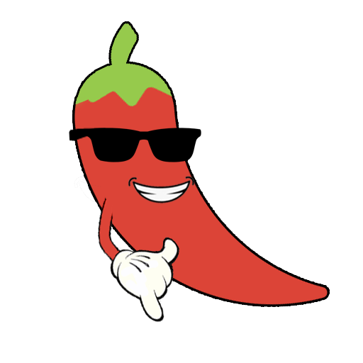

Quem somos?
Empresa de tecnologia fundada por estudantes do ensino superior de Análise e Desenvolvimento de Sistemas da Faculdade BandTec em 2020.

-
Missão
Informatizar dados e registros de plantações para que o produtor tenha um controle mais amplo de seu cultivo.
-
Visão
Informatizar as práticas de cultivo de pequenos produtores e agricultores familiares.
-
Valores
Colaborar para o desenvolvimento tecnologico do segmento. Colaborar para o desenvolvimento socio economico de pequenos produtores e agricultores familiares.